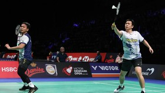

Jadwal Wakil Indonesia di French Open 2024 Hari Ini, Rabu 6 Maret
CNN IndonesiaRabu, 06 Mar 2024 06:50 WIB
Tangerang, CNN Indonesia -- Seluruh pasangan ganda putra Indonesia akan tampil hari ini dalam laga babak pertama French Open 2024 di Adidas Arena, Paris, Rabu (6/3).
Pada hari pertama penyelenggaraan French Open 2024, Selasa (5/3), hanya ada lima wakil Indonesia yang berlaga. Sementara hari ini akan ada tujuh wakil yang bakal berupaya meraih tiket ke babak kedua atau babak 16 besar.
Sederet atlet-atlet ganda putra bakal turun bertanding. Menurut jadwal yang sudah disusun, Mohammad Ahsan/Hendra Setiawan akan menjadi ganda putra pertama Indonesia yang akan tampil. Ahsan/Hendra bakal bertemu wakil tuan rumah Lucas Corvee/Ronan Labar.
Duel Leo/Daniel vs Lu/Yang bersamaan dengan jadwal tanding Rehan Naufal Kusharjanto/Lisa Ayu Kusumawati yang akan menghadapi unggulan kedua sektor ganda campuran asal Jepang Yuta Watanabe/Arisa Higashino.
Kemudian Fajar Alfian/Muhammad Rian Ardianto ditantang Ben Lane/Sean Vendy dari Inggris. Fajar/Rian kemungkinan bakal tampil bareng bersama pasangan ganda putri Meilysa Trias Puspitasari/Rachel Allessya Rose yang berjumpa unggulan kedua ganda putri Baek Ha Na/Lee So Hee asal Korea Selatan.
Setelah itu satu-satunya wakil tunggal putra yang bermain hari ini, Chico Aura Dwi Wardoyo, bakal bertemu Kodai Naraoka.
Laga terakhir wakil Indonesia hari ini bakal dilakoni pasangan Muhammad Shohibul Fikri/Bagas Maulana yang akan melawan pasangan Taiwan Lee Jhe Huei/Yang Po Hsuan.
Pertandingan French Open 2024 hari ini akan dimulai pada pukul 10.00 waktu setempat atau 16.00 WIB.
Pada hari pertama French Open 2024, Indonesia telah memastikan tiga tiket ke babak kedua melalui Anthony Sinisuka Ginting, Gregoria Mariska Tunjung, dan Apriyani Rahayu/Siti Fadia Silva Ramadhanti.